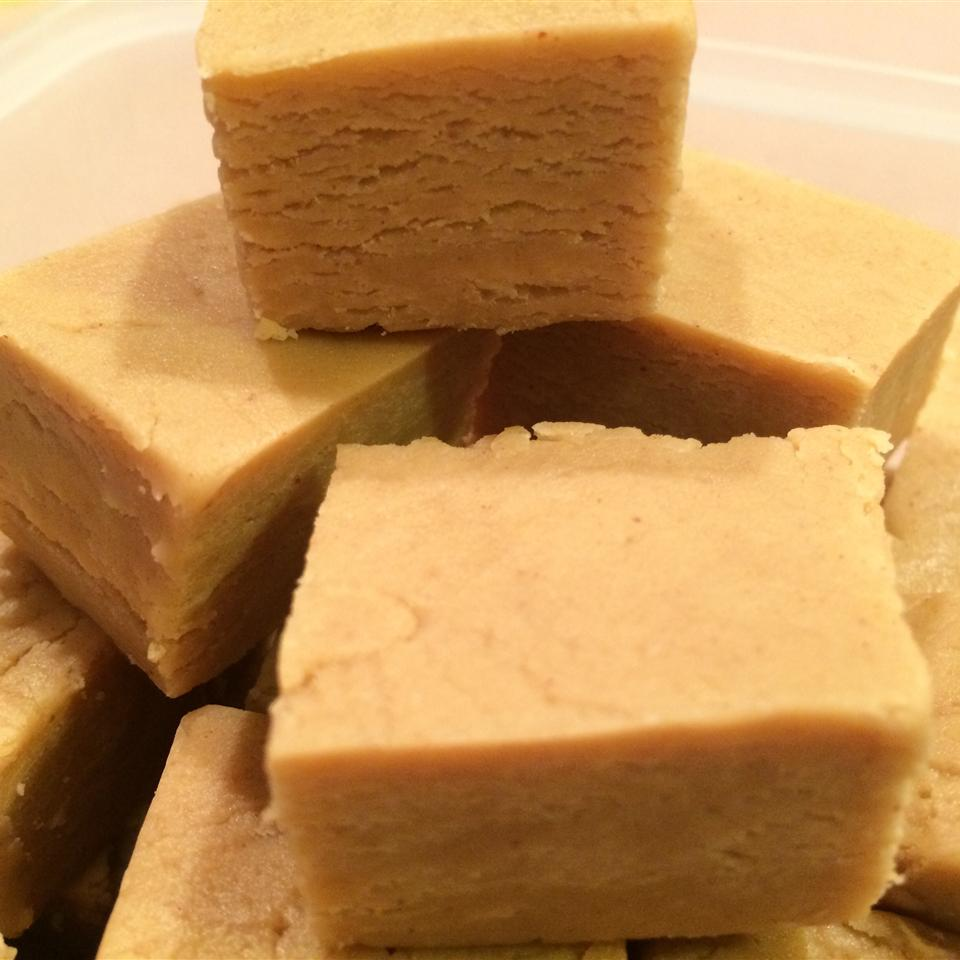

Easiest Peanut Butter Fudge

Description
This is the best recipe for creamy and delicious peanut butter fudge I have ever used. It is great for sharing at work.
Ingedients
- ½ cup butter
- 1 (16 ounce) package brown sugar
- ½ cup milk
- ¾ cup peanut butter
- 1 teaspoon vanilla extract
- 3 ½ cups confectioners' sugar
Steps
- Melt butter in a medium saucepan over medium heat. Stir in brown sugar and milk. Bring to a boil and boil for 2 minutes, stirring frequently. Remove from heat. Stir in peanut butter and vanilla. Pour over confectioners' sugar in a large mixing bowl. Beat until smooth; pour into an 8x8 inch dish. Chill until firm and cut into squares.